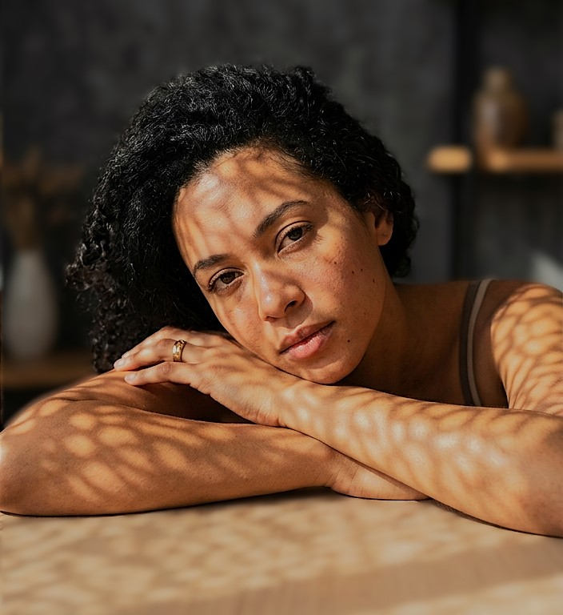

Biografia
O Estúdio Âmbar nasceu da união entre criatividade, sensibilidade e o propósito de transformar
momentos significativos em imagens que permanecem ao longo do tempo. Acreditamos que a fotografia
não se limita ao registro de um instante, mas representa uma forma de preservar histórias,
identidades e emoções.
Nossa trajetória começou a partir do interesse em explorar a fotografia como uma linguagem capaz de
comunicar sentimentos e contar histórias sem a necessidade de palavras. A partir dessa visão, surgiu
a proposta de criar um estúdio que valorizasse não apenas a qualidade técnica das imagens, mas
também a experiência e a individualidade de cada cliente.
Atuamos na criação de retratos, ensaios fotográficos, registros de momentos especiais e projetos
personalizados, desenvolvendo cada trabalho de maneira cuidadosa e alinhada aos objetivos de quem
nos procura. Nosso processo combina planejamento, direção criativa, composição e atenção aos
detalhes para alcançar resultados autênticos e visualmente marcantes.
Um dos principais diferenciais do Estúdio Âmbar está na forma como entendemos cada projeto. Em vez
de seguir fórmulas prontas, buscamos compreender a personalidade, a história e as expectativas de
cada cliente. Essa abordagem nos permite desenvolver fotografias que representam pessoas e momentos
de maneira mais natural, criando resultados únicos e personalizados.
Nosso objetivo é construir uma identidade sólida no mercado fotográfico, reconhecida pela qualidade,
criatividade e atenção aos detalhes. A cada novo projeto, buscamos não apenas entregar boas imagens,
mas criar um trabalho que tenha significado e que possa ser valorizado mesmo muitos anos depois.
No Estúdio Âmbar, cada fotografia representa uma história. Nosso propósito é transformar essas
histórias em imagens capazes de atravessar o tempo.
Estúdio Âmbar — fotografia para histórias que permanecem.
O Estúdio Âmbar é uma empresa fictícia criada para fins demonstrativos.
